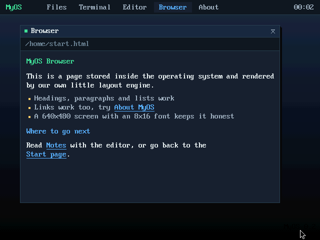
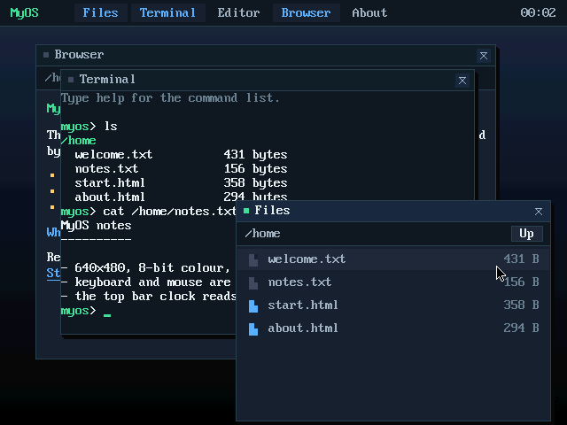

A real desktop operating system, written from scratch — running entirely in this browser tab.
This boots MyOS — a desktop with windows, a mouse, a file manager, a text editor, a terminal and a browser — inside a virtual PC emulated in your browser. Nothing is installed on your computer.
Click Terminal in the top bar, then type help and press Enter.
Drag windows by their title bar. Click × to close one.


A hand-written 32-bit kernel: its own boot sector, interrupt handlers, keyboard and mouse drivers, graphics stack, window manager and apps. No Linux underneath.
Files — browse the in-memory file system · Terminal — 16 shell commands · Editor — edit and save text files · Browser — a tiny page renderer with clickable links · About — live system information.
The browser emulates a PC (v86). The emulated BIOS reads the first
sector of myos.img, that 512-byte program loads the kernel
and switches the CPU into protected mode, and the kernel asks VESA for
a 640×480 framebuffer.